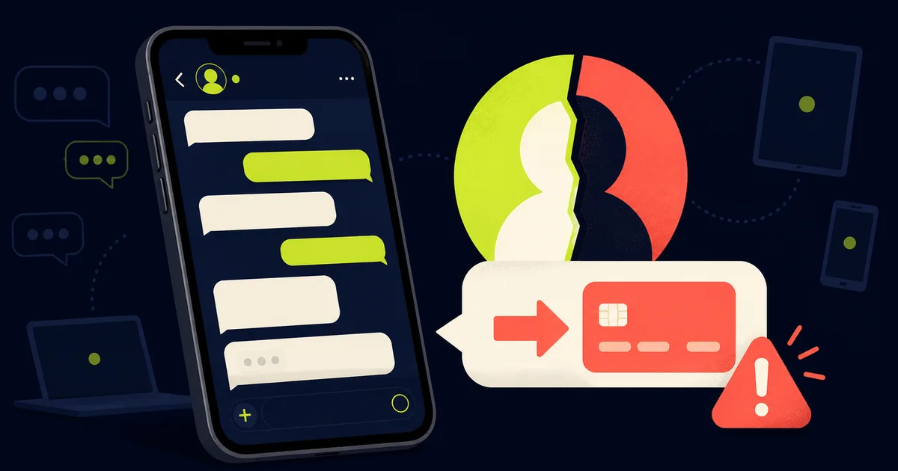

In breve
Non rispondere con un pagamento: telefona alla persona.
Il 5 febbraio 2026 CERT-AGID ha segnalato un aumento dei messaggi WhatsApp inviati da account compromessi. Il truffatore contatta amici e familiari della vittima e chiede denaro con urgenza, facendo leva sulla fiducia già associata a quel profilo.
Fonte primaria controllata. Dinamica e indicazioni provengono dall’avviso pubblicato da CERT-AGID e dal Centro assistenza ufficiale di WhatsApp.
Perché il messaggio sembra credibile
La richiesta arriva da una conversazione reale, con il nome e la foto di un contatto conosciuto. Il testo parla spesso di una spesa imprevista, cure mediche o problemi con la carta e chiede un trasferimento immediato. Non è necessariamente il telefono della persona a essere stato rubato: il criminale può mantenere una sessione collegata tramite WhatsApp Web o un altro dispositivo.
Una risposta coerente o la conoscenza di qualche dettaglio personale non bastano a provare l’identità. Chi controlla l’account può leggere parti delle conversazioni e usare le informazioni disponibili per rendere la storia più convincente.
I segnali più importanti
- Chiede denaro all’improvviso. La richiesta non è coerente con le abitudini della persona.
- Vuole una ricarica o un pagamento urgente. La fretta serve a impedire una verifica.
- Evita la telefonata. Inventa problemi al microfono, riunioni o altre ragioni per continuare solo in chat.
- Indica un beneficiario diverso. Il conto o la carta appartengono a una terza persona.
Cosa fare prima di pagare
Chiama il contatto
Usa la normale chiamata telefonica o incontralo di persona. Non limitarti a una chiamata WhatsApp avviata dalla stessa chat compromessa.
Fai una domanda verificabile
Se non risponde, contatta un familiare comune. Non inviare documenti, codici o schermate per dimostrare la tua disponibilità.
Segnala e avvisa
Se confermi il furto dell’account, avvisa subito la persona e gli altri contatti comuni usando un canale diverso.
È il tuo account a essere compromesso?
- Apri Dispositivi collegati: disconnetti tutte le sessioni che non riconosci, comprese quelle di WhatsApp Web.
- Controlla anche le chat archiviate: il truffatore potrebbe aver scritto a contatti che consulti raramente.
- Attiva la verifica in due passaggi: imposta un PIN e associa un indirizzo email che controlli.
- Avvisa i contatti: comunica che le richieste di denaro inviate dal tuo account non erano autentiche.
- Se hai già pagato: contatta immediatamente la banca o il servizio usato per verificare se il trasferimento può essere bloccato o richiamato.
Trasparenza
Fonti verificate
Aggiornamenti e correzioni
Nessuna correzione al momento. Per segnalare un errore scrivi a redazione@hackerino.it.
Aiuta la redazione
Hai ricevuto una richiesta simile?
Puoi inviarci una segnalazione senza includere codici, dati bancari o conversazioni private non necessarie.